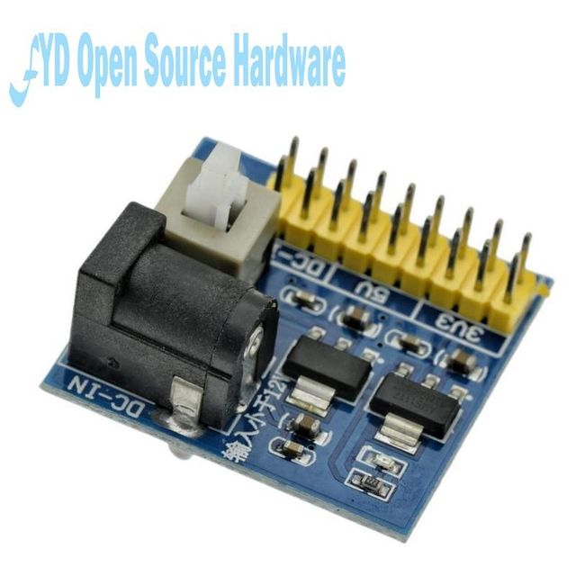
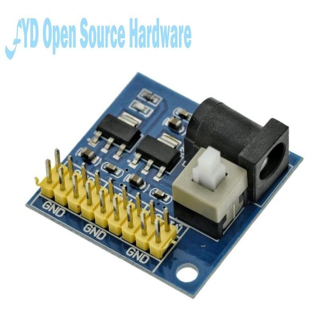
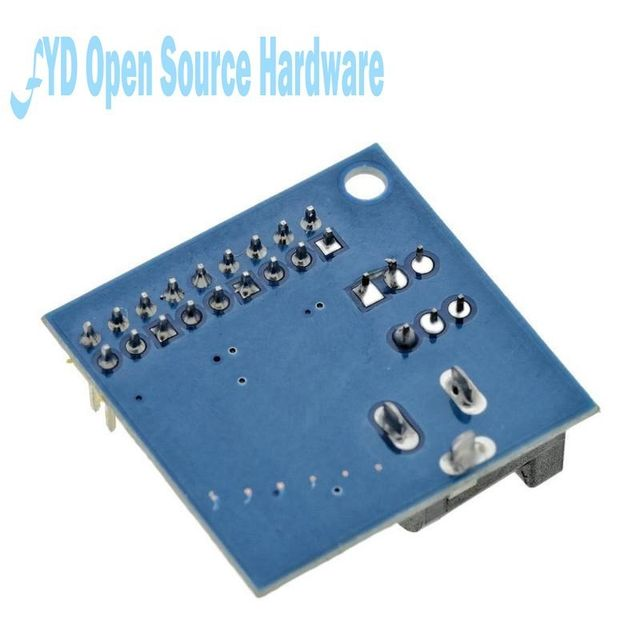
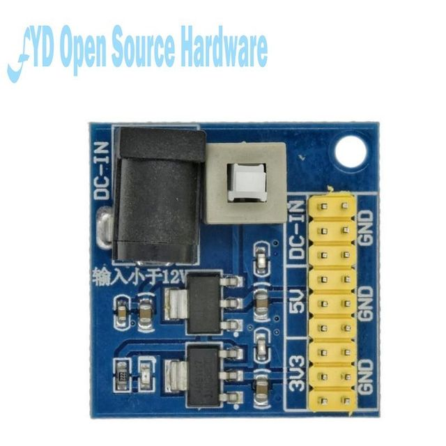

3.3V 5V 12V multi-output voltage conversion module DC-DC 12V to 3.3V 5V power supply module
A baby description
1 input: DC 6V - 12V (input voltage must be higher than the output voltage 1V or more.)
2 + output: 3.3V (+ - 0.2v error), 5.0V (+ - 0.2v error), 800mA (load current can not exceed 800ma), 12V (input 12V direct output)
3 double panel design, beautiful layout;
4 input and output using multiple pin, easy to use and connect;
5 PCB board size: 4.5cm * 4.5cm
6 with power indicator (red)
Two shipping list:
3.3V 5V 12V multi-output voltage conversion module 1 (test pass)



